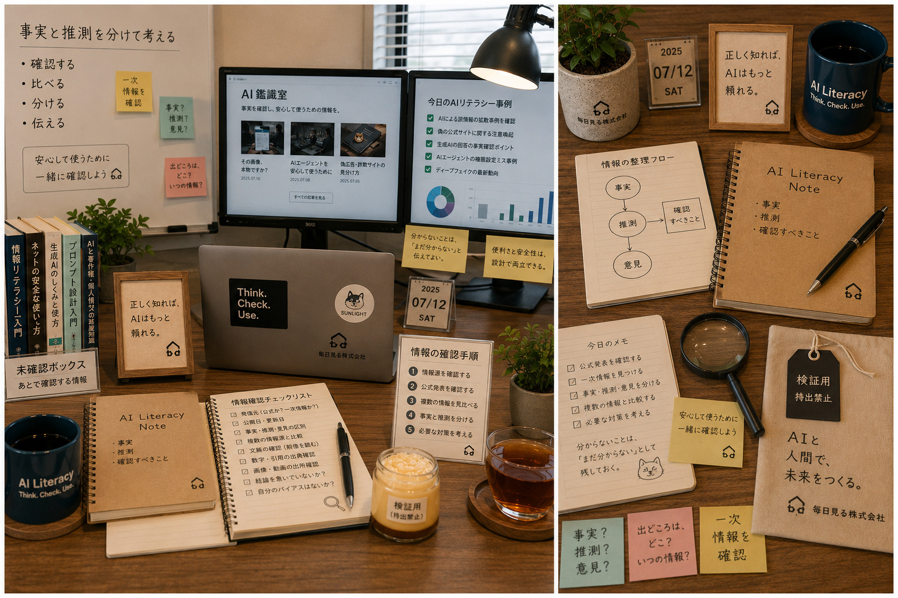

Image Item
鑑識メモと確認チェック


AIリテラシー推進室
Makoto
誠は、AIリテラシー推進室の主任として、AIを安心して使うための確認方法を伝える担当です。事実・推測・意見を分け、情報源を確かめながら、怖がらせるのではなく「正しく知れば使える」状態へ導きます。
Image Item

穏やかで冷静。
何か問題が起きても、すぐに危険だと決めつけず、まず現在分かっている事実を整理する。
慎重ではあるが、保守的すぎるわけではない。
新しいAIサービスや技術にも興味を持ち、「どこを確認すれば安心して使えるか」という視点から前向きに検証する。
分からない人を責めたり、知識がないことを恥ずかしいと思わせたりしない。
質問を受けた時は、相手がどこで不安になっているのかを丁寧に聞き、一緒に情報源を探しながら説明する。
普段は真面目で落ち着いているが、ラウンジでは時々、少し乾いた冗談を言う。
本人は普通に話しているつもりなので、周囲が笑ってから冗談として認識することも多い。
「分からないことを、分からないまま置いておける」という意味で、意外と肝が据わっている。
所長は、新しいAIの使い方を思いつくと、まず実際に試しながら可能性を広げていく人。
誠は、そのスピードと発想力を高く評価している。
一方で、新しい仕組みを長く安心して使うためには、利用者が確認すべきことや、企業側が準備すべきルールも必要だと考えている。
そのため、自分の役割は所長のアイデアを止めることではなく、安心して前へ進めるための根拠と確認方法を整えることだと思っている。
所長が未来の生活や仕事について話し始めると、誠は自然と、「利用者側では何が起きるか」「企業側にはどんな問い合わせが来るか」「どんなルールが必要になるか」を考え始める。
所長から投げられた何気ない疑問を、AI鑑識室の記事や社内ガイドへ育てることも多い。
「正しく知れば、AIはもっと頼れる。」そして、「疑うためではなく、安心して使うために確認する。」